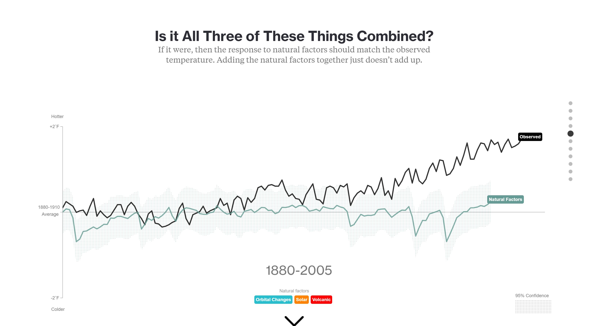
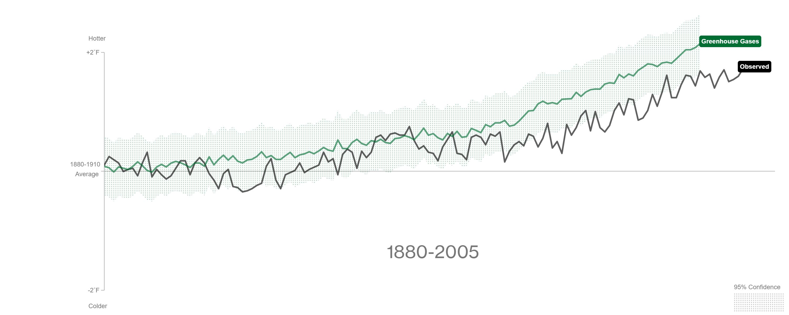

Critique of ‘What’s Really Warming the World?’ by Eric Roston and Blacki Migliozzi
At this point in time the evidence presented by the scientific community is overwhelming. Humans are contributing to the rapid warming of our planet and to the extreme changes in weather patterns and steps need to be taken to mitigate these effects. And yet, there are a loud minority that continue to deny reality and insist that the planet is going through a series of natural changes that impact the world’s climate. In order to sway some of these skeptics and to make some of this argument visual and more digestible to the general populace, many people have attempted to convey this information through interactive data visualization. This includes work by Eric Roston and Blacki Migliozzi that attempts to explore some of these deniers’ counter arguments.

Their data visualization piece, ‘What’s Really Warming the World?’, was first published by Bloomberg Businessweek on June, 2015. The piece looks at various natural factors that global climate change deniers have proposed as an alternative to the widely accepted hypothesis that global climate change is a phenomenon caused by humans, and it juxtaposes these data sets on the graph that shows temperature change. The question being explored is quite clear from the title of the piece, and the overall goal of the authors is to not only refute the hypothesis of climate change deniers, but to show a correlation between increased greenhouse gas emissions and increased temperature. The main information is conveyed through a simple, yet effective, line graph that maps the years 1880 – 2015 on the x-axis and deviation from the average on the y-axis. As the user scrolls down, different colored lines appear on the same graph as the temperature line, and the text changes to explain the different data that is being compared. At the final panel of the story, all the previous data sets are plotted on the same graph, and the user is able to highlight different lines to isolate the desired data graph. At first glance, it seems as if this article is executed perfectly. The integrity of the data and methodology, the way the authors tell a narrative with that data, and the aesthetic quality of the visualization are the bright spots of the piece, however, the confusing y axis on the graphs and the content of the text are problematic.
Before an in-depth analysis of the article, it is always important to check the validity of the data being presented. It is especially important in this case because climate change debate has been deeply entrenched in American politics, and any bias data could hurt the argument being presented. The expert on data design, Edward Tufte, states, “Graphical excellence begins with telling the truth about the data.” (Tufte, 53) Even though he was probably referring to truth in relationship to the visual representation of data, this is equally important when evaluating the data source of various articles. Roston and Migliozzi are very transparent about their data set and methodology, and they include a long description at the bottom of the article. The climate models they are using to get their information are written by NASA GISS. NASA is a well-known, organization that has a reputation for being technology driven, and more importantly for the purposes of this debate, an organization that is non-political. Roston and Migliozzi also provide links for their raw data. They also explain their methodology and that ‘deviation from the average’ is used as a metric because of the problems in using absolute temperatures. The reputable, a-political source and granting everyone data set access strengthens the credibility of the authors and the credibility of the conclusions presented.
In order to construct a cohesive narrative and present the data in a meaningful way, Roston and Migliozzi use an interactive technique called, “Sequencing”. Andy Kirk in his Data visualization handbook describes it as, “letting users navigate through predetermined, different angles of analysis about a subject… This is a quintessential example of storytelling with data exploring the metaphor: ‘this happened’ and then ‘this happened…” (Kirk, 229). By applying this method, the raw temperature data graphs of ‘What’s Really Warming the World?’ transform into a suspenseful journey. There is one graph per scroll, and the authors start with all the natural changes compared to temperature increase: orbital changes, sun temperature, volcanic activity. The story builds as each natural change graph provides no pattern or correlation to temperature increase. They look at a variety of other factors and graphs as well, until they hit you with the final slide that shows an increase in green house gases over time juxtaposed with an increase in temperature. The user must wait for answers each time they scroll, as the graph lines do not immediately appear, but animate over time; further adding to the building of suspense. This method of sequencing transforms graphs on a page to a controlled story that creates a more memorable data visualization experience. Hopefully this artful narration will help the conclusion stick in the skeptic’s mind.
Looking more closely at the information displayed, the graphs convey the raw data in a simple, yet visually pleasing way. They are not cluttered or distracting. The elegance of the graphics adds to the overall quality of the article, and their aesthetic quality can be judged by looking at several of Edward Tufte’s rules for representation. Proportionally, the graph should be greater in length then height, because the eye is naturally inclined to register changes to the horizon (Tufte, 186). Roston and Migliozzis’ graphs do just that. The years represented on the x axis stretch longer than the y axis, and the lines themselves are meant to be read as deviations from the average. Additionally, line weights should contrast to convey meaning. Greater line weights should be given to information with greater meaning (Tufte, 186). Again, the graphs look dynamic because of the varying line weights. The axis are represented by thin black lines and thin text, while the data is represented with think, colored lines and bold text to denote its importance in the graph. These two rules seem very simple, but add a nuanced hierarchy and beautiful aesthetic to the data being displayed in the article.

Even though this piece employs many great storytelling and graphic techniques, it still falls victim to confusion on the y axis. The methodology described at the beginning states that the data is displayed as a deviation from the norm, however, it is not clear what metric is being used to measure this deviation. Since, there are multiple disparate factors being analyzed I originally thought that it was being measured as a percentage. For example, green house gas emissions are 400% greater in 2015 than the 1880-1990 average. But the y axis is labeled with +2°F and -2°F. It took a great while (and reading the explanation at the very end of the story) to figure out that the colored lines labeled as “Orbital Change” or “Volcanic” are not actually graphing a change in orbit or an increase in the eruption of volcanoes. They are measuring the temperature deviation that is directly caused by “Orbital Change” and “Volcanoes”. This way of thinking seems a bit convoluted and confusing, and it distracted from the narrative. Moving the bottom explanation to the very beginning of the article would alleviate some of the confusion and make the piece better.
Additionally, the text at each new scroll leads the viewers and does not allow them to make their own conclusions from the data. Sentences such as, “[the Sun’s] temperature has had very little effect on the earth’s climate”, that appear above the solar graph do not serve a meaningful purpose. The visual display of the data should be enough for the users to reach the intended conclusion on their own. A summary of interpretations would fit better at the end of the article. Since the discussion of climate change is political, some skeptics may feel that the text forces them to come to a certain conclusion. The article would be more meaningful if the authors used only the raw data to implicitly steer users to their desired conclusion, rather than explicitly stating the conclusion at each scroll.
Overall the data visualization was well presented both textually and graphically. With the (exhausting) political nature of the global climate change debate, it is important to appear fair and balanced. The transparency and credibility of the NASA based dataset would hopefully convince a user that the information presented is unbiased. The use of sequencing to tell a story with the data makes this piece engaging and memorable, and the visual quality adds to the professionalism and quality of the argument. It is concerning that the y axis is confusing at first and that the texts prevents the user from drawing their own conclusions. These two factors might dissuade a skeptic from interpreting the facts, however, both problems are easily fixed with some copy editing.
Kirk, Andy. Data Visualisation: A Handbook for Data Driven Design. SAGE Publications, 2016.
Tufte, Edward. Visual Display of Quantitative Information. Graphics Press, 2001.